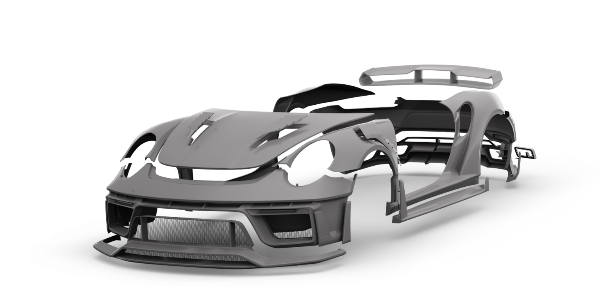
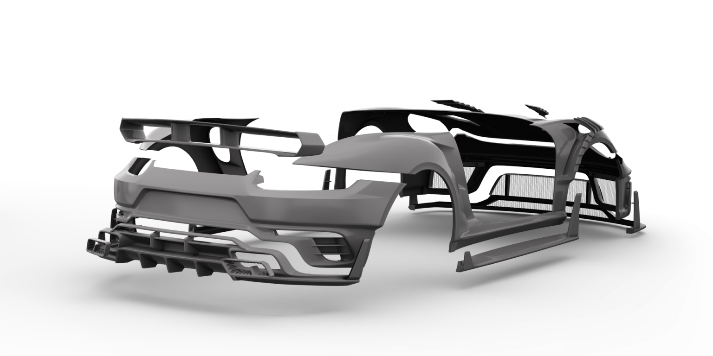
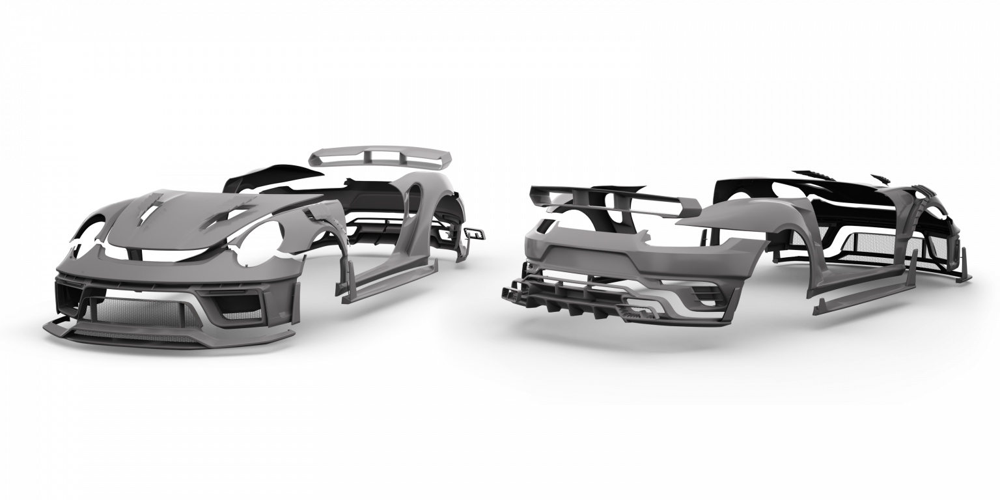

SCL performance Lamborghini Urus
SCL GLOBAL Concept is proud to introduce its largest-scale styling kit for the Lamborghini Urus so far. The
extensive aerodynamic package incorporates 42 parts.
The main and most technically challenging parts include the hood, the rear apron and diffuser, the front
bumper, and the fender extensions (front fenders replaced completely).
The aerodynamic kit comes in two forms to choose from: ultra-high-temperature Fiberglas (glass fiber
reinforced plastic, GFRP) and Carbon (exclusive edition, complete with a unique pattern).
All parts made from ultra-high-temperature Fiberglas (GFRP) weigh the same as the OEM parts, have standard
thickness (2-3 mm), are extremely durable, and withstand temperatures up to +120°C (+248°F).
The exclusive Carbon version of the kit takes advantage of manufacturing processes analogous to those found in
the aeronautical industry and benefits from excellent durability, working temperatures exceeding +120°C
(+248°F), and low weight (lighter than the OEM parts).
Another advantage of carbon fiber comes in the form of its unique physical structure and visual aesthetics,
which is particularly essential for luxury vehicle owners.